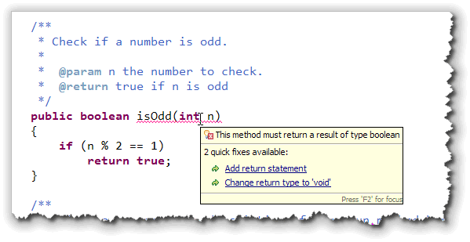
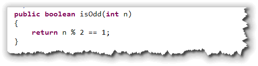

So far you've learned how to write
procedures and functions, and how to
use the if statement to make decisions. In this section, we want
to marry those two concepts together,
and learn how to write predicate (or logical) functions.
These are similar to the problems you'll see on your CS 170 programming proficiency quizzes. We'll start by looking at the concept of selection in the context of writing your own functions.
Functions and Selection
With procedures, it really doesn't matter (syntactically) if you
always have two alternatives. If you use a simple if
statement, then when the condition is true, the
actions in the body of the statement are executed; when the
condition is false then nothing happens.
With a function, though, it's possible to have a return
statement inside of an if statement. If you do that,
though, you have to return a value in each and every case:
when your condition is true and when
your condition is false. That means that functions
using if can have several different
return statements, as long as every single
branch leads to a return.
Let's look at a simple example.
The isOdd() Function
You can tell if an integer is odd by using the remainder operator. If the remainder of the number divided by 2 is 1, then the number is odd. We can put that algorithm into a function like this:

Notice that:isOdd()is a predicate function. That is, it has abooleanreturn type.- The function has one parameter,
nwhich is the number to test. - If the remainder of the number divided by 2 is 1, we
return
true, just like we said.
So why is the compiler complaining?
The answer is very simple, yet it is one that students frequently
struggle with. A function must return a value for each and
every path through the code. This function returns a value
when the number n is odd. What does it do when the number is
even?
Nothing!
Four Solutions
There are several different ways to fix this problem. The
first way is how we've been doing it in class (and the classical
solution). Simpley create a result variable
at the top of your function, modify result
as necessary inside your if statement,
and then return result at the very
end of your function. That way you only have one exit
from your function.
If you want to skip the result variable and
use the multiple-return style, then here are two additional
solutions that will work:
- You can add an
elseclause for the case when the number is even like this:

- Since the
returnstatement ends the function when the number is odd (inside theifstatement body), any code following it is only executed when the number is even. That means you really don't need anelse; you can just write this:

Boolean Return Values
The fourth alternative is a little harder to explain, but you
should make the effort to understand it. Often, the best
way to implement a predicate function is to avoid using
if statements at all, and simply return the
result of the Boolean expression. Let me explain how that
works.
Assume that we take the test expression inside the if
statement, and store it inside a boolean variable.
Once we do that, the variable (result) will
contain true if the number is odd and false
if the number is even.
Then, we can simply return that boolean variable,
instead of the literal values, true or false,
like this:

Of course, we really don't need the variable result,
do we? Instead, we can just return the Boolean expression
result like this:

This is a fairly standard way to write a predicate function.